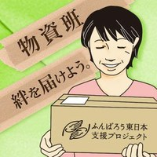

【お知らせ】
当コンテンツは2018年9月のふんばろう東日本支援プロジェクトのホームページ閉鎖に伴いこちら（GitHubのハイパーリンク）に移転しました。すでに活動は終了し今後の更新はありませんが、物資支援プロジェクトの記録として公開しておく予定です。
これまでみなさまから頂いた温かいご支援とご理解に、改めて心より御礼申し上げます。

ふんばろう物資支援プロジェクト
ふんばろう東日本「物資支援プロジェクト」は、ホームページで被災地の方々が必要としている物資を募集し、それをご覧になって物資を送ってくださる支援者さんとの間に入り、双方の橋渡しをしました。活動して行く中で想定外のいろいろなことが起こりました。それらを振り返り、良かった点、失敗した点をまとめました。再び大きな自然災害が起きた時はネットを利用した物資支援活動が有効な場合もあると思います。その時に参考にしていただければ幸いです。
ふんばろう東日本「物資支援プロジェクト」は、ホームページで被災地の方々が必要としている物資を募集し、それをご覧になって物資を送ってくださる支援者さんとの間に入り、双方の橋渡しをしました。活動して行く中で想定外のいろいろなことが起こりました。それらを振り返り、良かった点、失敗した点をまとめました。再び大きな自然災害が起きた時はネットを利用した物資支援活動が有効な場合もあると思います。その時に参考にしていただければ幸いです。